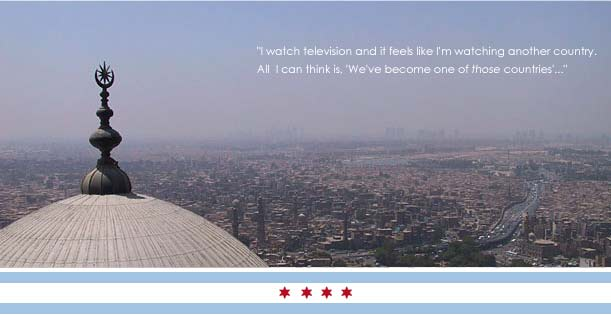

Now my heart is full
And I just can't explain
So I won't even try to’”
-Morrissey
“There's nothing that can describe the current feeling in the air,” explains an Iraqi woman on the topic of her city, “It's like that Morrissey song.” In our interview she references the song while trying to describe the irrationality, the emotional upheaval caused by the occupation of Baghdad .
But the truth is she has tried to describe it.
For more then a year now, the 25-year-old Iraqi woman has been keeping a document of her life. She lives near a bend in the Tigris River in the north of Baghdad and, when the electricity permits, she posts the stories of her life since the start of the war to her website under the appropriately unassuming and anonymous name of Riverbend. Born in Iraq and educated for eight years in America , she now shares her story and the story of her city with anyone who cares to read it
Americans are delivered news of daily atrocities in Iraq from our televisions, radios and newsstands. The American public has been made well aware throughout the war that what is displayed on the nightly news can be digested as information weighted by stereotypes, by government media regulations, by our own ignorance of Iraqi culture, each impeding our understanding of Baghdad as a contemporary city with identifiable traits, not unlike our own idea of a city. The difference between the recent war in Iraq and the first gulf war is Baghdad . The gulf war was fought in the desert, removed from the city center and removed from the civilians living in that major metropolis. U.S. military forces designed this war with invading and occupying Baghdad as its goal.
Riverbend follows the news from inside Baghdad . As the Arab media more readily displays graphic detail of both the war and the rocky transfer of sovereignty, Iraqis watch the aftermath of the explosions, many of which they can hear from inside their homes, on the nightly news.
“ Baghdad is calm and relatively quiet if you don't count the frequent explosions. Actually, when we don't hear explosions, it gets a bit worrying. Hearing them is a relief and you can loosen up after they occur and hope that they'll be the last of the day…I watch television and it feels like I'm watching another country. All I can think is, ‘We've become one of those countries...' You know- the ones where hostages are taken on a daily basis and governments warn their civilians of visiting or entering the country.”
What Riverbend discusses, both in her blog and our interview, is a sentiment that can be easy to fall prey to when our military occupies a country. “[ Iraq 's] become one of those countries.” Iraq , perhaps, has always been “one of those countries” to us, to the stereotypically isolated Americans who collectively learn about a country only after we've invaded it. But when Iraq is cited as such by its very inhabitants, how can we try to identify with the city of Baghdad and its inhabitants? This month, sixosix magazine brings you, through our conversations with a girl living in it, a story of Baghdad as a city, a city irrevocably influenced by the war and its recent “freedom”, but a city with customs and landmarks and stories, none the less.
If history repeats itself, which it does, Baghdad has a long history of being attacked and occupied. It is a city that in its inception was built to house an army. Baghdad was founded in 762 and for a time, it was the largest city in the Middle East before losing that honor to Constantinople . Baghdad was once home to Muslims, Christians, Jews and pagans from across the Middle East and Central Asia . It was also one of the most forward thinking cities in the world, one of the first to do away with the chaste system and open up its society to people from all backgrounds and economic levels.
For over 600 years the city grew and matured at an astounding rate until 1258 when the city was sacked a nd burned by Mongols led by Hulagu, the grandson of Genghis Khan. After this occupation, which destroyed much of the cities infrastructure, the city was caught defenseless for the next 650 years while it was occupied and fought over by one invading army after another. In 1921, Baghdad became the capitol of the newly formed country of Iraq , which began to rebuild itself with the profits from oil discovered 12 years earlier. With a new found independence from the British Empire in 1932, the rise of the Baath party and Saddam Hussein in the 1960's, Baghdad was able to build itself into the modern city it is today.
Iraq is, in fact, a city of 21 st century, not the 16 th . Riverbend's frustration in confronting Baghdad 's occupation has much to do with the Western mission to redesign an antiquated city that cannot help itself. She spells out the dichotomy she too often sees in the understanding of her city:
“The Myth: Iraqis, prior to occupation, lived in little beige tents set up on the sides of little dirt roads all over Baghdad . The men and boys would ride to school on their camels, donkeys and goats. These schools were larger versions of the home units and for every 100 students, there was one turban-wearing teacher who taught the boys rudimentary math (to count the flock) and reading. Girls and women sat at home, in black burkas, making bread and taking care of 10-12 children.
“The Truth: Iraqis lived in houses with running water and electricity. Thousands of them own computers. Millions own VCRs and VCDs. Iraq has sophisticated bridges, recreational centers, clubs, restaurants, shops, universities, schools, etc. Iraqis love fast cars (especially German cars) and the Tigris is full of little motor boats that are used for everything from fishing to water-skiing.
“In other words- there was something there in the first place. We have one of the most sophisticated networks of highways in the region: you can get from Busrah, in the south, to Mosul , in the north, without once having to travel upon those little, dusty, dirt roads they show you on Fox News. We had a communications system so advanced, it took the Coalition of the Willing three rounds of bombing, on three separate nights, to damage the Ma'moun Communications Tower and silence our telephones.
The current city of Baghdad has a population of about 5.5 million people. The entire city of Chicago by comparison only has just over 2.8 million people living in it. The entire metro area of Chicago , which includes Cook, DuPage, Grundy, Kane, Kendall, Lake , McHenry, and Will counties, has just over 8 million people. The size of Baghdad is roughly 81 square miles and the city is divided in half by the Tigris River . If we took 81 square miles of Chicago it would have it borders being the lake on the east, Pulaski on the west, North Avenue on the north and 63 rd Street on the south.
Just north of the central district of Baghdad, jutting out into the Tigris River is Baghdad 's largest park, called Baghdad Island. It is a haven of both tourist attractions and green space. For Riverbend, it was “one of the few places you could go to breath” in the city. The park is about 128 acres total and to put that into perspective the newly opened Millennium Park here in Chicago is only 24.5 acres. The park was an attraction for the whole Middle East with over 50,000 visitors a day passing through. Today the park is home to the US Military forces in Baghdad and is closed to the public. The central part of Baghdad including Baghdad Island has been blockaded and shutdown, appropriately called the Green Zone by our media.
Because it is difficult to visualize an unfamiliar city, to put this into context, it would be comparable to shutting down the Loop . Doing so would not only disrupt the business that is in the area but it would also deny access to some of our most well known and enjoyed attractions: Grant Park, Buckingham Fountain and the Museum Campus.
Baghdad is a particularly modern city, but what about a modern society? Baghdad has just over 1000 public schools compared to Chicago 's 602 schools. It is an incredible school system, though many of these schools have closed down because parents no longer let their children out of the house to go to school. It is difficult for any family member, let alone children to get permission to leave the house these days. Riverbend explains the challenge of getting out of the house in an occupied city. Her trip to Karrada she compares, for our benefit, to what she imagines our Magnificent Mile to be, and though Karrada is an out door market, it sounds about right: shoppers, tourists, long lines, total chaos.
| go to page 2 |